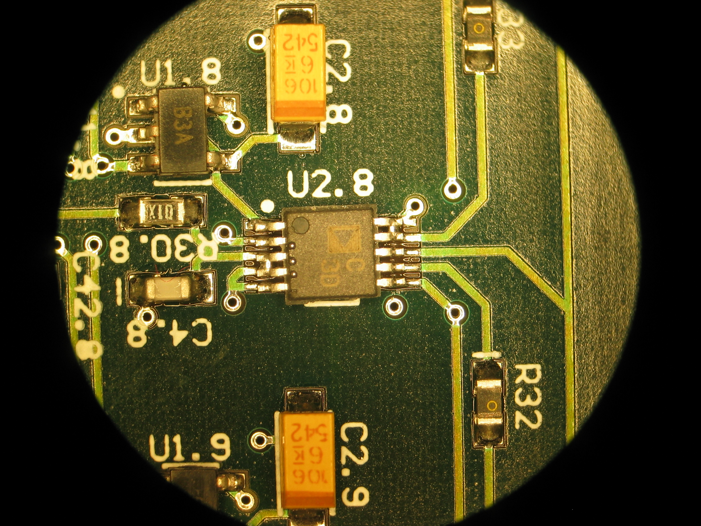

14 May 2006
Another day, another series of tests. Unfortunately, the acqboard
prototype we received from eTech-WEB had numerous shorts in it,
including an impossible-to-fix one that appeared to be under the PGA
between channel B2 and B1. I have removed those channels for the time
being.

The visible shorts on the ADC are above.
The current state of our benchmarking code really leaves something to
be desired, and should undergo a comprehensive clean-up at some point
in the near future. In particular, I'm unclear on how exactly I run
THD+N tests, noise tests, linearity tests, etc. and produce my expected
plots.
Ultimately, the problem is that the code that you want to run when
debugging is different from the code that you want to run when running
large-scale performance tests. The situation is similar with the
graphical output.
We generate the following data with Experiments2.py, and then use
thdnMeasure.py to plot:

Which is associated with the non-svn'd file 20060514.all.h5.